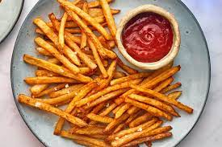

My Top 10 Favorite Foods
Sinigang

Sinigang is a Filipino soup or stew that has a sour and salty flavor. It's most commonly associated with tamarind, but it can also be made with other sour fruits and leaves. It is one of the most well-known Filipino dishes.
Adobo

Filipino adobo is a popular Filipino dish and cooking method that involves marinating meat, seafood, or vegetables in vinegar, soy sauce, garlic, bay leaves, and black peppercorns, browning in oil, and then simmering in the marinade.
Menudo

Menudo, also called ginamay or ginagmay in the Philippines, is a traditional stew made with pork and sliced liver in a tomato sauce with carrots and potatoes. It does not contain tripe or red chili sauce, unlike the Mexican dish of the same name.
Ice Cream

Ice cream is a sweetened frozen treat that is commonly consumed as a dessert or snack. It's made with milk or cream and flavored with a sweetener, like sugar or an alternative, and a spice, like cocoa or vanilla, or fruit, like strawberries or peaches.
Buko Salad
Buko salad, also known as young coconut salad, is a Filipino fruit salad made with fresh young coconut strips, sweetened milk or cream, and various other ingredients. It's one of the most popular and widely served Filipino desserts at parties and fiestas.
Spaghetti

Spaghetti is a cylindrical, long, thin, solid pasta. It's a common dish in traditional Italian cooking. Spaghetti, like other pasta, is made from milled wheat and water, and is sometimes supplemented with vitamins and minerals. Durum wheat semolina is used to make Italian spaghetti.
French Fries
French fries, also known as chips, finger chips, french-fried potatoes, or simply fries, are deep-fried batonnet or allumette-cut potatoes that originate in either Belgium or France. They are made by cutting the potato into even strips, drying it, and then frying it in a deep fryer.
Beef Steak
A flat cut of beef with parallel faces, usually cut perpendicular to the muscle fibers, is known as a beefsteak. The raw mass of a single serving in a typical restaurant service ranges from 120 to 600 grams. Grilled, pan-fried, or broiled beef steaks are common.
Hamburger

A hamburger is a sandwich made up of fillings usually a patty of ground meat, usually beef that are sandwiched between two sliced buns or bread rolls.
Corndog
A corn dog is a sausage on a stick that has been deep fried after being coated in a thick layer of cornmeal batter. It is a dish that originated in the United States and is popular in American cuisine.